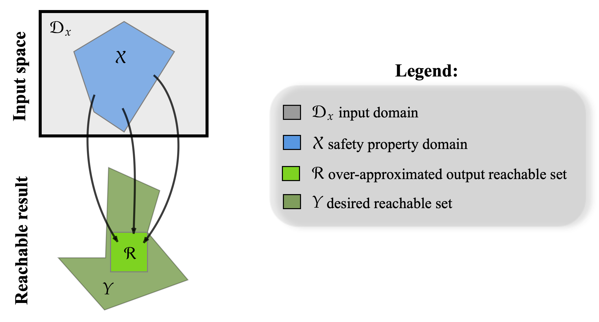
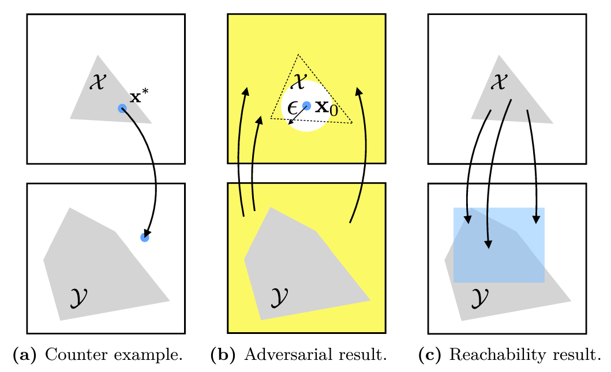

Problem Outline
Verification checks if the input-output relationships of a function, specifically deep neural networks (DNN) $\mathcal{F}$ in this case, hold. For an input specification imposed by a set $\mathcal{X}\subseteq \mathcal{D}_x$, we would like to check if the corresponding output of the function is contained in an output specification imposed by a set $\mathcal{Y}\subseteq \mathcal{D}_y$:
\[x\in\mathcal{X} \Longrightarrow y = \mathcal{F}(x) \in \mathcal{Y}.\]
Thus, a DNN-Verification problem consists of two main components:
- model (DNN) : $\mathcal{F}$
- safety property (input-output specification) : $\mathcal{X}, \mathcal{Y}$.

Due to the nonlinear and nonconvex nature of DNNs, estimating the exact reachable set is impractical, although there are algorithms that allow us to do this such as ExactReach. Thus, we preform an over-approximation of the reachable set, called $\mathcal{R}$. We check its containment in the desired reachable set $\mathcal{Y}$ which if ture, we can assert that the safety property holds.
Once we instantiate
Below, we give a brief overview of models (Network), safety property, and outputs (verification results).
Network
Details on Network
Safety Property
Details on Input-Output Specification
Output (Verification Results)
| Output result | Explanation |
|---|---|
[BasicResult::hold] | The input-output constraint is always satisfied. |
[BasicResult::violated] | The input-output constraint is violated, i.e., it exists a single point in the input constraint that violates the property. |
[BasicResult::timeout] | Could not be determined if the property holds due to timeout in the computation. |
[CounterExampleResult] | Like BasicResult, but also returns a counterexample if one is found (if status = :violated). The counterexample is a point in the input set that, after the NN, lies outside the output constraint set. |
[AdversarialResult] | Like BasicResult, but also returns the maximum allowable disturbance in the input (if status = :violated). |
[ReachabilityResult] | Like BasicResult, but also returns the output reachable set given the input constraint (if status = :violated). |
[EnumerationResult] | Set of all the (un)safe regions in the safety property's domain. |

Problem
ModelVerification.Problem — TypeProblem{P, Q}(network::Network, input::P, output::Q)Problem definition for neural verification. The verification problem consists of: for all points in the input set, the corresponding output of the network must belong to the output set.
There are three ways to construct a Problem:
Problem(path::String, model::Chain, input_data, output_data)if both the.onnxmodel path andFlux_modelare given.Problem(path::String, input_data, output_data)if only the.onnxmodel path is given.Problem(model::Chain, input_data, output_data)if only theFlux_modelis given.
Fields
network:Networkthat can be constructed either using the path to an onnx model or aFlux.Chainstructure.input: input specification defined using a LazySet.output: output specification defined using a LazySet.
ModelVerification.prepare_problem — Methodprepare_problem(search_method::SearchMethod, split_method::SplitMethod,
prop_method::PropMethod, problem::Problem)Converts the given Problem into a form that is compatible with the verification process of the toolbox. In particular, it retrieves information about the ONNX model to be verified and stores them into a Model. It returns the Problem itself and the Model structure.
Arguments
search_method(SearchMethod): Search method for the verification process.split_method(SplitMethod): Split method for the verification process.prop_method(PropMethod): Propagation method for the verification process.problem(Problem): Problem definition for model verification.
Returns
model_info(Model): Information about the model to be verified.problem(Problem): The given problem definition for model verification.
Result
ModelVerification.Result — TypeResultSupertype of all result types.
See also:
ModelVerification.BasicResult — TypeBasicResult(status::Symbol)Result type that captures whether the input-output constraint is satisfied. Possible status values:
:holds (io constraint is satisfied always)
:violated (io constraint is violated)
:unknown (could not be determined)ModelVerification.CounterExampleResult — TypeCounterExampleResult(status, counter_example)Like BasicResult, but also returns a counter_example if one is found (if status = :violated). The counter_example is a point in the input set that, after the NN, lies outside the output set.
ModelVerification.AdversarialResult — TypeAdversarialResult(status, max_disturbance)Like BasicResult, but also returns the maximum allowable disturbance in the input (if status = :violated).
ModelVerification.ReachabilityResult — TypeReachabilityResult(status, reachable)Like BasicResult, but also returns the output reachable set given the input constraint (if status = :violated).